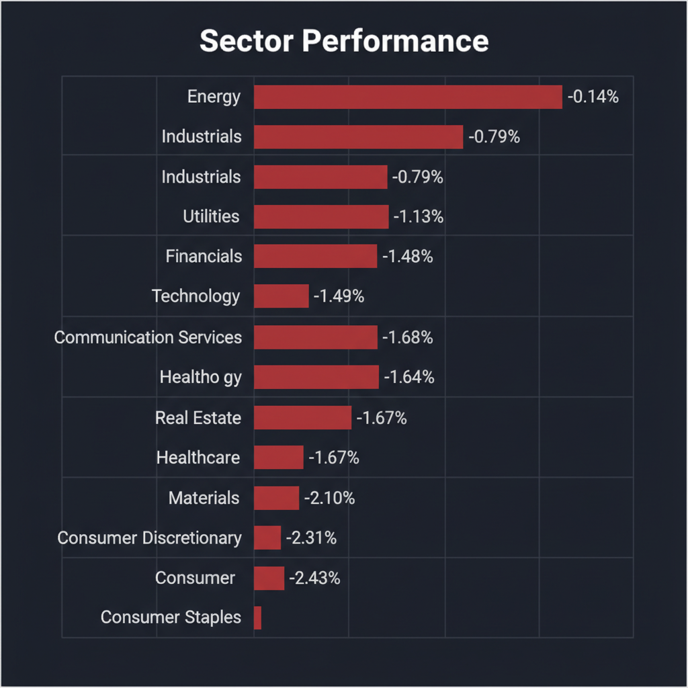
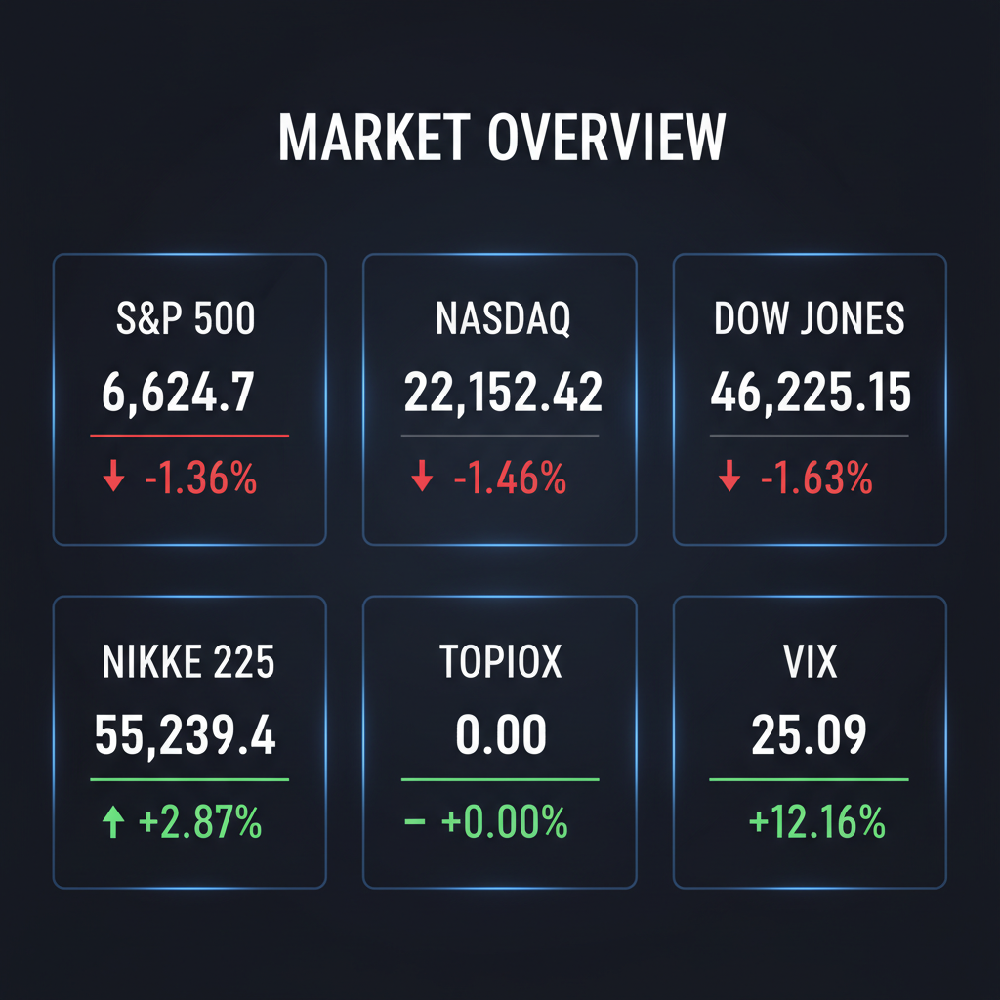

Daily Investment Report - 2026-03-19
Generated: 2026/3/19 8:14:33


投資チームミーティング 最終レポート
本日は活発な議論をありがとうございました。マクロ経済の悪化と地政学リスクが交錯し、各エキスパート間で「パニック相場での中小型株の押し目買い」と「全面的なリスクオフ・現金化」という明確な意見の対立が見られました。議長として、これらの分析を統合し、資本防衛を最優先としながらも次なる成長機会を見据えた投資家向けの最終レポートを以下の通り作成しました。
1. エグゼクティブサマリー
* インフレ懸念の再燃と中東のエネルギー施設被弾という地政学ショックが重なり、市場はVIX指数が25を超える強烈なリスクオフ（資金逃避）局面に突入しています。
* 暴落に乗じて財務優良な中小型株の押し目買いを狙う意見がある一方、テクニカルやリスク管理の観点からは「落ちてくるナイフ」であり、現金比率の大幅な引き上げとダウンサイドヘッジの構築が急務です。
* 当面は新規の積極的な買いを控え、資本の防衛を最優先としながら、エネルギー安全保障やAI防犯などの次世代インフラを担う「隠れた中小型優良銘柄」の監視に留めるべきです。
2. 注目銘柄リスト
強気（買い推奨）
*
TOA（6809.T） [約300億円]: 強固な財務基盤（PBR1倍割れ）を持ち、同社の音響技術とエッジAIを組み合わせた次世代防犯セキュリティへの進化が期待される有望な中小型バリュー株です。
*
Energy Recovery, Inc. (ERII) [約10億ドル]: 海水淡水化のエネルギー回収技術で独占的シェアを持ち、中東リスクを背景とした水・エネルギー安全保障の特需と、産業用冷却システムへの横展開によるTAM（獲得可能市場規模）の爆発的拡大が期待されます。
*
FMC (FMC) [約70億ドル]: 農業化学セクターでの世界的な在庫調整により株価が低迷していましたが、買収関心の浮上によりバリュエーションの底打ちが見え、下値リスクが限定的な中型バリュー銘柄です。
中立（様子見）
*
東京機械製作所（6335.T） [小型株]: 直近で好決算を発表しましたが、日本市場全体が先物主導で強烈なギャップダウン（窓空け下落）に巻き込まれるリスクが高く、チャートの底打ちを確認するまでは様子見が賢明です。
*
Independent Bank (IBCP) [約6億ドル強]: 銀行のM&A（買収）合意が報じられましたが、マクロ環境の悪化と「年内利下げなし」の観測に伴う資金調達コストの上昇リスクを鑑み、積極的な追随は控えるべきです。
弱気（警戒）
*
航空・運輸関連銘柄全般 [各種]: 中東空域制限による9,100kmの「ファントムフライト」の発生と原油高が燃料・運用コストを直撃し、営業利益率の劇的な悪化が避けられません。
*
有利子負債過多な中小型株 [各種]: VIX急騰によるパニック売りでの流動性枯渇と、金利高止まりによる利払い負担増大の直撃を受けるため、ネットキャッシュがマイナスの企業からは直ちに資金を引き上げるべきです。
3. セクター推奨ランキング
*
1位: エネルギー（トラディショナル＆クリーン）
中東のインフラ被害を背景とした原油高のヘッジとして直近で機能するだけでなく、中長期的には国家安全保障レベルでの「脱化石燃料」投資が加速するため。
*
2位: 防衛・防災・セキュリティインフラ
地政学リスクの緊迫化と治安不安に伴い、従来の防衛装備だけでなく、サイバーセキュリティやAI監視カメラ等の次世代インフラ需要が急拡大しているため。
*
3位: 大手金融（ウェルスマネジメント特化）
高金利環境の恩恵を受けつつ、プロスポーツ選手など新興富裕層向けビジネスの多角化により、相対的に底堅い収益基盤を期待できるため。
*
4位: 半導体・AI
構造的なメガトレンドですが、足元では業界全体が莫大な設備投資（CAPEX）サイクルに突入しており、フリーキャッシュフローの圧迫懸念から市場全体のボラティリティが収まるまでは下位に位置付けます。
*
5位: 一般消費財・生活必需品
インフレ高止まりによる消費者の実質購買力低下と、企業側のコスト増（原油高・物流費増）の価格転嫁の限界により、マージン・スクイーズ（利益率の圧迫）が避けられないため。
*
6位: 航空・運輸
地政学的要因による物理的な空域制限と燃油コスト急騰のダブルパンチを受け、事業環境が現在最も悪化しているため。
4. 今週の注目イベント
* 本日（今夜）: 米国市場における複数の大型決算発表
* 3月19日: 日本市場の個別銘柄（霞ヶ関ホテル、サツドラHD、ファマライズ等）の決算発表
* 随時: 中東情勢（イラン・イスラエル・サウジアラビア周辺の軍事衝突、および湾岸エネルギー施設の被害状況）に関するヘッドライン
* 随時: 米FRB高官の発言およびインフレ・金利見通しに関する動向
5. リスク要因
* VIX指数25超えに伴う、機関投資家（ボラティリティ・ターゲティング・ファンド等）による機械的な株式パニック売り（デレバレッジ）の連鎖。
* 中東紛争の激化による「第3次オイルショック」と、それに伴うFRBの再利上げ観測の浮上（スタグフレーションの現実化）。
* 日経平均先物の1,400円超の大幅下落が示唆する、日本市場オープン時の強烈なギャップダウンと個人投資家の追証売りの発生。
* 資金調達コストの高止まりによる、有利子負債の多い中小型企業の資金繰り悪化と連鎖的な倒産リスク。
* AI・半導体セクターにおける、莫大な設備投資（CAPEX）要請によるフリーキャッシュフローの枯渇と、それを嫌気した「バリュートラップ（見せかけの割安）」の崩壊。
6. アクションアイテム
* 株式のポジションサイズを通常の半分以下に縮小し、キャッシュ（現金）比率を50%以上の最大レベルまで直ちに引き上げる。
* 現在保有しているすべてのポジションに対し、現在価格の数%下に機械的なストップロス（逆指値注文）を必ず設定する。
* 全体相場のフラッシュ・クラッシュ（瞬間的暴落）に備え、主要指数に対するアウト・オブ・ザ・マネーのプットオプションを購入し、ダウンサイドヘッジを構築する。
* 利益率の悪化が確実視される航空・旅行関連銘柄、および高PERの一般消費財銘柄をポートフォリオから即座に売却または除外する。
* TOA（6809.T）やEnergy Recovery（ERII）など、強固な財務と独自のニッチ技術を持つ中小型株を「監視リスト」に追加し、VIXの低下と日足チャートでの明確な底打ち（ダブルボトム等）を確認するまでエントリーを見送る。